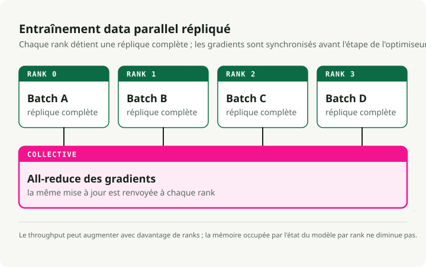
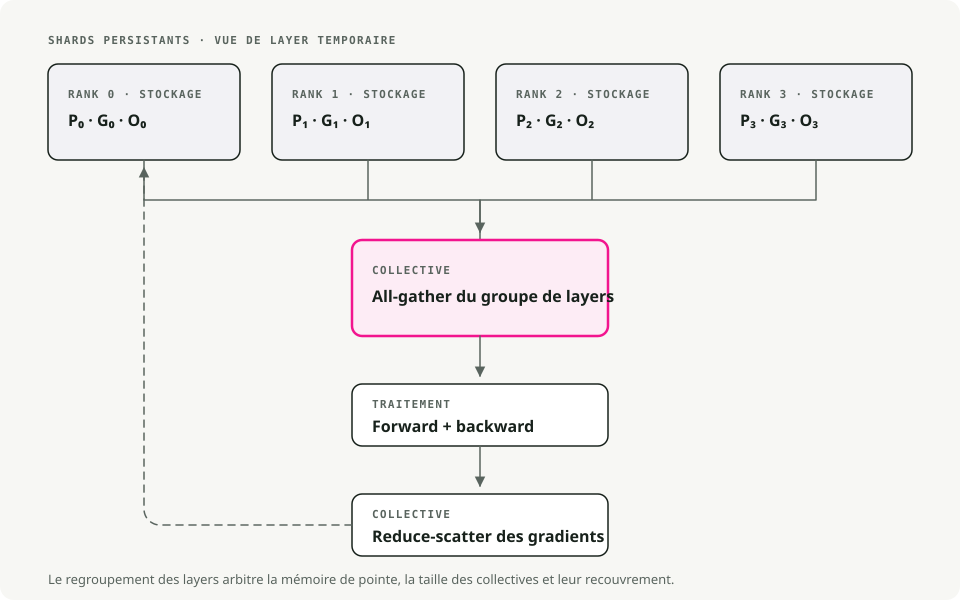
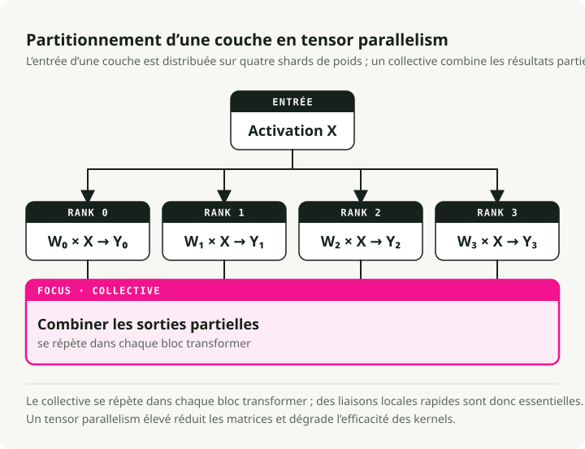
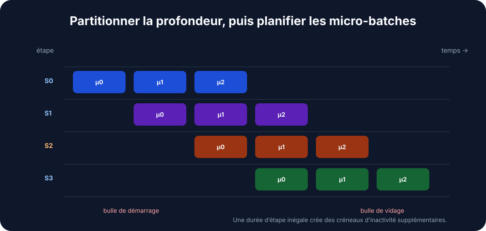
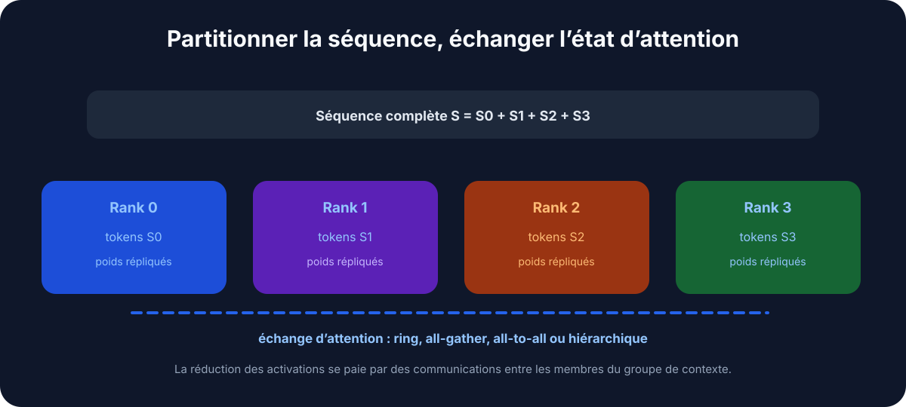
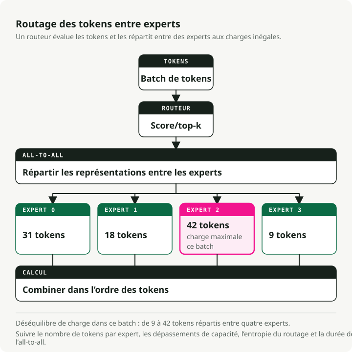
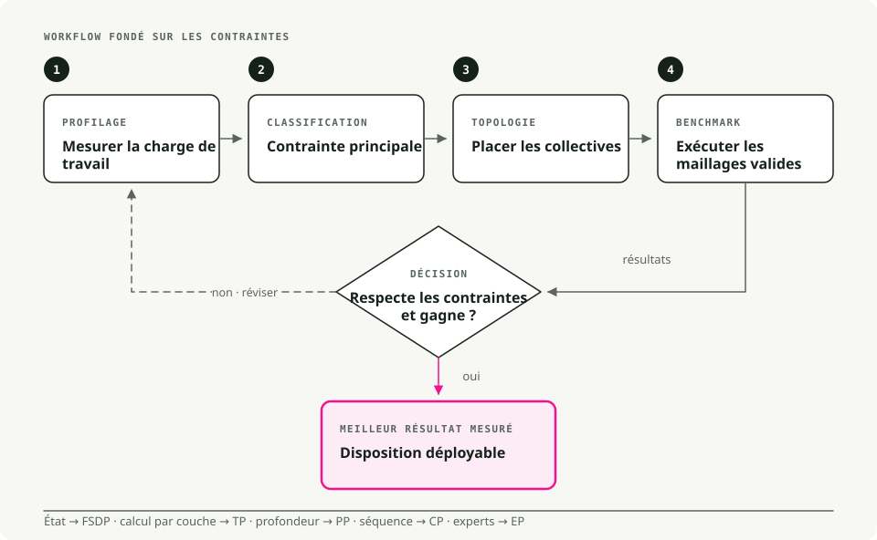

Traduction automatique
Cet article a été traduit automatiquement depuis la version originale en anglais.
Mise à l’échelle des grands modèles de langage : stratégies multi-GPU et multi-nœuds qui tiennent en pratique
Les LLM actuels ne tiennent pas sur un seul GPU. Un modèle de 70B paramètres demande environ 140GB rien que pour les poids en FP16, soit presque deux fois ce qu’un A100 peut contenir. Entraîner ou servir ces modèles implique de répartir le travail sur plusieurs GPU, et un mauvais découpage gaspille l’essentiel de votre budget de calcul.
Voici un guide pratique des stratégies de parallélisme qui fonctionnent réellement en production, tiré de l’Ultra-Scale Playbook de Hugging Face.
Prérequis
Vous tirerez le meilleur parti de cet article si vous êtes déjà à l’aise avec :
- la rétropropagation, les gradients et des optimiseurs comme AdamW ;
- les mécanismes des transformers : attention et réseaux feed-forward ;
- les bases de PyTorch :
nn.Module,DataLoader, la boucle d’entraînement standard.
Pourquoi la mise à l’échelle compte
Quatre facteurs vous obligent à sortir du GPU unique. Un modèle de 70B demande environ 140GB en FP16, soit presque le double des 80GB d’un A100. Même sur huit A100, un entraînement from scratch d’un 13B prend des semaines. Les contextes longs (32K tokens et plus) dépassent la mémoire d’un seul GPU avant même d’avoir fait un travail utile. Et en charge de production, l’inférence distribuée est ce qui empêche la tail latency de s’emballer.
1. Techniques de parallélisme, expliquées simplement
1.1 Parallélisme de données (DP)
Le découpage le plus simple. Chaque GPU conserve le modèle complet et traite une tranche différente du batch. Après la rétropropagation, les GPU font un all-reduce de leurs gradients (moyennage), puis chacun met à jour sa propre copie. Des modèles identiques, des données différentes, des poids synchronisés.
À utiliser quand le modèle tient confortablement sur un GPU et que vous voulez simplement traiter plus de batches par seconde. Le coût de mise en place est quasi nul ; le DDP de PyTorch s’ajoute en une ligne. Le piège, c’est la mémoire : chaque GPU conserve toujours le modèle complet, les états de l’optimiseur et les gradients. Vous gagnez donc en débit, pas en capacité.

Outils : PyTorch DDP, Horovod.
1.2 Fully sharded data parallelism (FSDP)
Le DP, mais avec une gestion mémoire. Les paramètres, les gradients et les états de l’optimiseur sont shardés entre les GPU. Pendant le passage forward, chaque GPU récupère auprès des autres les paramètres dont il a besoin, calcule, puis libère les shards empruntés pour récupérer de la mémoire. Le passage backward répète le gather, puis réduit les gradients pour que chaque GPU ne mette à jour que son propre shard.
C’est la couche à utiliser une fois que le modèle a dépassé la capacité d’un seul GPU (en général au-delà d’environ 10B paramètres) et que vous voulez continuer à entraîner sur une seule machine sans réécrire votre code. En pratique, FSDP permet d’entraîner des modèles 4 à 8× plus grands que ce qui tient sur un seul GPU.

[!NOTE] Les stages ZeRO, en bref FSDP est souvent décrit avec le vocabulaire de ZeRO (Zero Redundancy Optimizer) :
- Stage 1 : shard des seuls états de l’optimiseur (~4× de gain mémoire).
- Stage 2 : shard des gradients + états de l’optimiseur (~8× de gain mémoire).
- Stage 3 : shard des paramètres + gradients + états de l’optimiseur (scaling linéaire avec N GPU).
Le FSDP de PyTorch adopte par défaut un comportement de Stage 3.
Activer FSDP dans PyTorch
from torch.distributed.fsdp import FullyShardedDataParallel as FSDP
# 1. Wrap your model
model = MyLLM()
model = FSDP(model)
# 2. Train as usual
output = model(input)
loss = output.sum()
loss.backward()
optimizer.step()
Outils : PyTorch FSDP, DeepSpeed ZeRO-3.
1.3 Parallélisme tensoriel (TP)
On répartit les couches elles-mêmes entre les GPU. Prenez une matrice de poids, découpez-la par colonnes (ou par lignes), et donnez un morceau à chaque GPU. Chaque device calcule sa partie de la sortie ; un all-reduce ou une concaténation recolle ensuite les résultats avant la couche suivante. Cela se produit à chaque couche.
Le TP devient utile quand les couches individuelles sont trop grosses même après FSDP — grosses matrices d’attention ou FFN très larges. Il suppose aussi un interconnect intra-nœud rapide : NVLink ou NVSwitch, pas PCIe. Entre plusieurs nœuds, l’all-reduce à chaque couche devient le goulot d’étranglement et le gain disparaît. Un degré de TP de 2 à 8 dans une seule machine est en général le bon compromis.

Outils : Megatron-LM, TensorRT-LLM, ColossalAI.
1.4 Parallélisme de pipeline (PP)
On découpe le modèle verticalement, par groupes de couches. Les couches 1 à 10 vivent sur le GPU 1, les couches 11 à 20 sur le GPU 2, etc. On envoie ensuite des micro-batches dans le pipeline pour que chaque stage reste occupé : le GPU 1 termine le batch 1 et le transmet au GPU 2, puis démarre immédiatement le batch 2. Avec suffisamment de micro-batches en vol, chaque device travaille en permanence sur quelque chose.
À utiliser quand le modèle est si profond que même FSDP ne suffit pas à le faire tenir, ou quand vous devez répartir sur plusieurs nœuds et que la bande passante inter-nœuds est le facteur limitant. La partie pénible, ce sont les « bulles » du pipeline — des stages inactifs au début et à la fin de chaque batch — qu’on réduit au minimum en lançant beaucoup de petits micro-batches plutôt que quelques gros.

Outils : DeepSpeed PP, Megatron-LM, GPipe.
1.5 Parallélisme de contexte (CP)
Pour les séquences très longues. On répartit un contexte de 64K tokens sur, par exemple, quatre GPU (16K tokens chacun). Chaque GPU exécute la self-attention sur son chunk local, puis les GPU échangent les clés et valeurs pour calculer les parties d’attention cross-chunk. Le résultat fusionné est celui que vous obtiendriez en exécutant le contexte complet sur un seul device, sans le coût mémoire.
C’est le levier à utiliser quand la longueur du contexte, et non la taille du modèle, est le goulot d’étranglement : analyse de documents longs, raisonnement à l’échelle d’un livre, génération de code sur un gros dépôt. C’est le CP qui rend possible l’entraînement à 100K+ tokens sur un matériel qui plafonnerait sinon à 8K.

1.6 Parallélisme d’experts (Mixture of Experts)
La spécialisation. On remplace les couches FFN denses par N sous-réseaux experts (8, 64, parfois plus). Un petit réseau de gating choisit les top-k experts (généralement top-2) pour chaque token. Seuls ces experts sont exécutés pour ce token ; les autres restent inactifs. Des experts différents peuvent résider sur des GPU différents, ce qui permet au modèle d’avoir énormément de paramètres au total tout en gardant un coût de calcul par token faible.
Mixtral-8x7B a 56B paramètres au total mais seulement ~13B actifs par token ; Grok et DeepSeek-V2 utilisent le même principe. Le prix à payer, c’est la complexité côté entraînement : l’équilibrage de charge entre experts devient un problème d’ingénierie à part entière, et l’instabilité du routage a déjà fait diverger plus d’un entraînement MoE.

Comparaison rapide : quel parallélisme utiliser ?
| Technique | Ce qui est découpé | Idéal pour | Gain mémoire | Coût de communication |
|---|---|---|---|---|
| Parallélisme de données (DP) | Les batches de données | Modèles qui tiennent sur 1 GPU | Aucun (copie du modèle) | Faible (gradients uniquement) |
| FSDP | Modèle + optimiseur + gradients | Modèles trop gros pour 1 GPU | Élevé (4–8×) | Moyen |
| Parallélisme tensoriel (TP) | Couches individuelles | Grosses couches, GPU rapides | Moyen | Élevé (à chaque couche) |
| Parallélisme de pipeline (PP) | Groupes de couches (stages) | Modèles très profonds | Moyen | Faible (entre stages) |
| Parallélisme de contexte (CP) | Longueur de séquence | Contextes longs (64K+ tokens) | Élevé (pour les activations) | Moyen |
| Parallélisme d’experts (MoE) | Experts dans les couches MoE | Modèles clairsemés massifs | Aucun (plus de params, moins de FLOPs) | Moyen |
Une valeur par défaut raisonnable : commencez par FSDP. Ajoutez du TP si les couches individuelles sont encore trop grosses. Ajoutez du PP quand vous devez répartir sur plusieurs nœuds. Ajoutez du CP quand la longueur du contexte devient le goulot d’étranglement.
2. Stratégies d’entraînement pratiques
Des configurations matérielles différentes appellent des combinaisons différentes. Voici ce que je ferais réellement dans trois cas fréquents.
2.1 Une seule machine, 2 à 8 GPU
Commencez par du FSDP pur — PyTorch FSDP ou DeepSpeed ZeRO-2/ZeRO-3 — piloté par Hugging Face accelerate ou torchrun. Si certaines couches d’attention ou FFN restent trop grosses même après le sharding, ajoutez ensuite un TP=2.
Quelques remarques spécifiques au matériel. Les GPU grand public (RTX 4090 et assimilés) sur PCIe devraient rester à TP=1 ou TP=2 au maximum ; l’interconnect ne suit pas au-delà. Les GPU serveur (A100, H100) avec NVLink gèrent sans problème du TP=2 à TP=4. Et sur huit GPU dans une seule machine, du FSDP pur suffit souvent jusqu’à 70B sans avoir besoin de TP.
2.2 Petit cluster, 2 à 16 nœuds (≤128 GPU)
Il vous faut du parallélisme 2D ou 3D : TP plus FSDP, éventuellement plus PP. La structure qui fonctionne en pratique :
- TP à l’intérieur de chaque nœud (TP=4 ou TP=8 avec NVLink).
- FSDP entre les nœuds pour le parallélisme de données.
- Ajoutez du PP si le modèle est si profond que même FSDP ne suffit pas, en le découpant verticalement entre les nœuds.
Pourquoi cette organisation fonctionne : NVLink est assez rapide pour absorber les échanges à chaque couche du TP, tandis que l’InfiniBand entre les nœuds n’a qu’à synchroniser les shards FSDP, ce qui coûte bien moins en communication. Effet net : vous minimisez le trafic inter-nœuds, qui est presque toujours le goulot d’étranglement à cette échelle.
Quand vous ajoutez du PP, réglez le nombre de micro-batches à au moins 4× le degré du pipeline. En dessous, les bulles mangent votre throughput.
2.3 Grand cluster (centaines à milliers de GPU)
C’est là que le parallélisme 4D (DP × TP × PP × CP) commence à avoir du sens. Associez chaque dimension à votre topologie matérielle et utilisez Megatron-LM ou Nanotron — ils prennent en charge la 4D nativement, et tout implémenter soi-même est un projet à part entière.
En pratique, vous n’en avez besoin que pour le préentraînement from scratch de modèles 70B+ avec des fenêtres de contexte 32K+ . La plupart des fine-tunings, même sur de gros modèles, n’en ont pas besoin.
Un exemple concret. Entraîner un modèle 70B avec un contexte 32K sur 512 GPU :
- TP=8 à l’intérieur de chaque nœud de 8 GPU.
- PP=4 sur quatre nœuds.
- CP=4 pour le contexte long.
- DP=4 pour le débit.
- 8 × 4 × 4 × 4 = 512 GPU.
L’efficacité de scaling sur une configuration comme celle-ci se situe autour de 70–80 % avec un bon InfiniBand, et vous pouvez pousser jusqu’à ~85 % avec un réglage fin. En dessous, vous laissez vraiment de l’argent sur la table.
3. Outils à connaître
Voici un mémo rapide pour choisir le bon :
| Outil | Quand l’utiliser | Courbe d’apprentissage | Idéal pour |
|---|---|---|---|
| Hugging Face Accelerate | Tout entraînement distribué avec peu de changements de code | ★☆☆☆☆ | Débutants, prototypes rapides |
| PyTorch FSDP | Modèles moyens à grands (1–30B) sur un seul nœud | ★★☆☆☆ | Le cas le plus courant |
| DeepSpeed ZeRO | Entraînement multi-nœuds avec une bonne documentation | ★★★☆☆ | Entraînement en production |
| Megatron-LM | Très grands modèles (70B+), parallélisme 3D/4D | ★★★★☆ | Production à grande échelle |
| Nanotron | Apprentissage et recherche sur le parallélisme moderne | ★★★☆☆ | Éducation, expérimentation |
| vLLM | Inférence rapide avec PagedAttention et KV caching | ★★☆☆☆ | Serving en production |
| TensorRT-LLM | Vitesse d’inférence maximale sur GPU NVIDIA | ★★★★☆ | Optimisation de l’inférence en production |
Configuration FSDP minimale avec accelerate
compute_environment: LOCAL_MACHINE
distributed_type: FSDP
fsdp_config:
fsdp_auto_wrap_policy: TRANSFORMER_BASED_WRAP
fsdp_backward_prefetch: BACKWARD_PRE
fsdp_state_dict_type: SHARDED_STATE_DICT
machine_rank: 0
main_process_ip: null
main_process_port: null
main_training_function: main
mixed_precision: bf16
num_machines: 1
num_processes: 8
use_cpu: false
Si vous débutez, je vous conseille de prendre Hugging Face Accelerate pour démarrer rapidement, puis de descendre vers PyTorch FSDP ou DeepSpeed une fois que vous avez besoin d’un contrôle plus fin.
4. Un cadre de décision

L’image ci-dessus reflète ce que je ferais en pratique : FSDP d’abord, TP quand les couches sont trop grosses, PP pour la profondeur sur plusieurs nœuds, CP pour les contextes longs. N’ajoutez de la complexité qu’une fois l’approche la plus simple réellement à bout de souffle.
5. Le mémo Ultra-Scale
L’équipe de Hugging Face a préparé un résumé visuel d’une page qui couvre l’essentiel de ce qui précède :

Conclusion
FSDP couvre la plupart des cas que vous rencontrerez. Le TP s’insère dans un nœud quand les couches individuelles ne tiennent toujours pas. Le PP répartit le modèle sur plusieurs nœuds quand la profondeur est la contrainte. Le CP intervient quand c’est la longueur du contexte qui vous fait manquer de mémoire. Le principe commun à toutes ces approches est d’aligner la stratégie de parallélisme sur la topologie matérielle dont vous disposez réellement, et d’ajouter une nouvelle dimension seulement quand la plus simple a atteint ses limites.
Pour aller plus loin :
- Hugging Face Ultra-Scale Playbook — le guide interactif dont s’inspire cet article.
- PyTorch FSDP Tutorial — le guide officiel de prise en main.
- DeepSpeed Tutorials — la documentation complète de DeepSpeed.